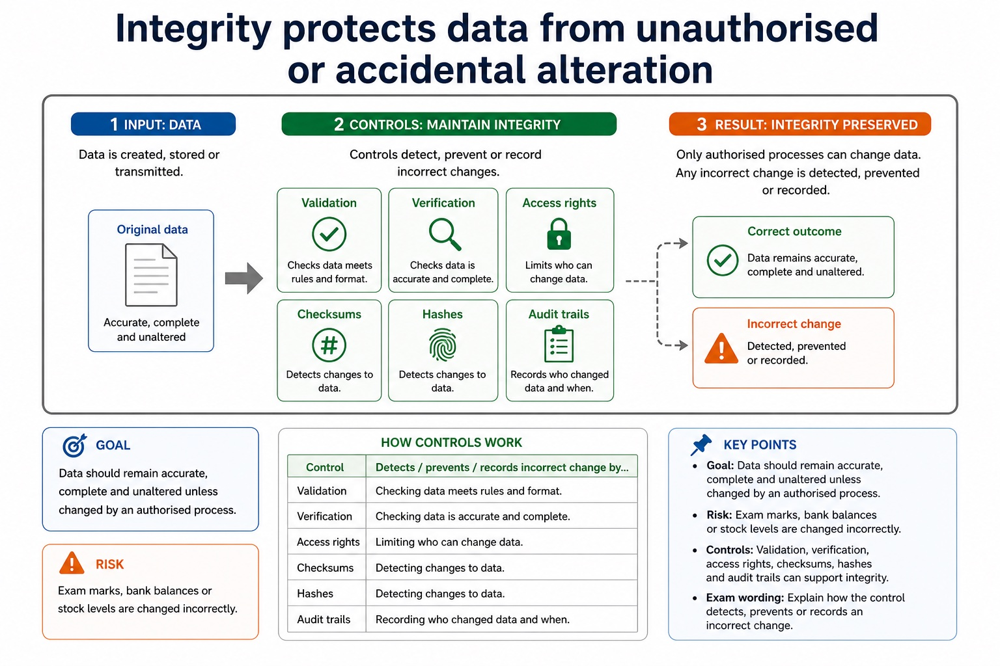

Lesson 062 | 45 minutes | Paper 1 Section 6 | Security, privacy and data integrity
Security is not one word. It is a set of goals that protect different things.
A control is only a good answer if it protects the right security goal in the scenario.
This lesson separates confidentiality, integrity, availability and authenticity, then maps each goal to suitable controls.
Defineconfidentiality, integrity, availability and authenticity
Classifyrisks and controls using the correct security goal
Justifywhy a safeguard fits the asset, threat and impact
Confidentiality: only authorised viewingIntegrity: accurate and unchanged dataAvailability: accessible when neededAuthenticity: identity or origin is genuine
Encryption is useful. It is not a universal spell for every problem.
Why this matters
Many answers lose marks because the control is real but protects the wrong goal for the scenario.
Common trap
Do not answer "encryption" automatically. It protects confidentiality, but not availability or poor user behaviour by itself.
Warm-up hook
If the school password is Password123, is the problem the hacker or our optimism?
Click the best diagnosis. The password is not weak; it is practically waving a small flag.
Choose one. A good security answer separates threat, vulnerability and control.
Knowledge point 1
Use the risk chain before naming a control
AssetSomething valuable that needs protection, such as exam marks, passwords or customer records.ThreatA possible cause of harm, such as unauthorised access, data corruption or service failure.VulnerabilityA weakness that a threat could exploit, such as weak passwords or poor permissions.ControlA safeguard that reduces likelihood or impact, such as access rights, backups or authentication.
Use the risk chain before naming a control: source-grounded visual explanation.
Lesson fact: Asset Something valuable that needs protection, such as exam marks, passwords or customer records.
Lesson fact: Threat A possible cause of harm, such as unauthorised access, data corruption or service failure.
Lesson fact: Vulnerability A weakness that a threat could exploit, such as weak passwords or poor permissions.
Lesson fact: Control A safeguard that reduces likelihood or impact, such as access rights, backups or authentication.
Knowledge point 2
Confidentiality protects data from unauthorised access
GoalOnly authorised users should be able to view or access the data.RiskPersonal details, passwords or exam marks are viewed by unauthorised people.ControlsAccess rights, authentication, encryption and least privilege can support confidentiality.Exam wordingSay who is prevented from reading what, and why they are unauthorised.
Confidentiality protects data from unauthorised access
Confidentiality protects data from unauthorised access: source-grounded visual explanation.
Lesson fact: Goal Only authorised users should be able to view or access the data.
Lesson fact: Risk Personal details, passwords or exam marks are viewed by unauthorised people.
Lesson fact: Controls Access rights, authentication, encryption and least privilege can support confidentiality.
Lesson fact: Exam wording Say who is prevented from reading what, and why they are unauthorised.
Knowledge point 3
Integrity protects data from unauthorised or accidental alteration
GoalData should remain accurate, complete and unaltered unless changed by an authorised process.RiskExam marks, bank balances or stock levels are changed incorrectly.ControlsValidation, verification, access rights, checksums, hashes and audit trails can support integrity.Exam wordingExplain how the control detects, prevents or records an incorrect change.
Integrity protects data from unauthorised or accidental alteration

Integrity protects data from unauthorised or accidental alteration: source-grounded visual explanation.
Lesson fact: Goal Data should remain accurate, complete and unaltered unless changed by an authorised process.
Lesson fact: Risk Exam marks, bank balances or stock levels are changed incorrectly.
Lesson fact: Controls Validation, verification, access rights, checksums, hashes and audit trails can support integrity.
Lesson fact: Exam wording Explain how the control detects, prevents or records an incorrect change.
Knowledge point 4
Availability keeps systems and data accessible when needed
GoalAuthorised users should be able to access data and services when required.RiskHardware failure, network failure or overload prevents legitimate use.ControlsBackups, redundancy, disaster recovery, UPS and monitoring can support availability.Exam wordingState what remains accessible or recoverable, and for whom.
Availability keeps systems and data accessible when needed
Availability keeps systems and data accessible when needed: source-grounded visual explanation.
Lesson fact: Goal Authorised users should be able to access data and services when required.
Lesson fact: Controls Backups, redundancy, disaster recovery, UPS and monitoring can support availability.
Lesson fact: Exam wording State what remains accessible or recoverable, and for whom.
Knowledge point 5
Authenticity checks that identity or data origin is genuine
GoalUsers, devices, messages or files should be verified as genuine.RiskAn attacker pretends to be a valid user, sender or website.ControlsAuthentication, digital certificates, digital signatures and multi-factor authentication can support authenticity.Exam wordingSay what identity or source is being verified, not just "make it secure".
Authenticity checks that identity or data origin is genuine
Authenticity checks that identity or data origin is genuine: source-grounded visual explanation.
Lesson fact: Goal Users, devices, messages or files should be verified as genuine.
Lesson fact: Risk An attacker pretends to be a valid user, sender or website.
Lesson fact: Controls Authentication, digital certificates, digital signatures and multi-factor authentication can support authenticity.
Lesson fact: Exam wording Say what identity or source is being verified, not just "make it secure".
Knowledge point 6
One control can support more than one goal, but not every goal
Control
Often supports
Why
Encryption
Confidentiality
Makes data unreadable without the correct key.
Access rights
Confidentiality and integrity
Limits who can view or alter data.
Backup
Availability
Allows recovery if data is lost or corrupted.
Hash/checksum
Integrity
Can detect whether data has changed.
Digital certificate
Authenticity
Helps verify identity or origin of a website/entity.
One control can support more than one goal, but not every goal
One control can support more than one goal, but not every goal: source-grounded visual explanation.
Lesson fact: Often supports
Lesson fact: Encryption
Lesson fact: Confidentiality
Lesson fact: Makes data unreadable without the correct key.
Lesson fact: Access rights
Lesson fact: Confidentiality and integrity
Lesson fact: Limits who can view or alter data.
Lesson fact: Availability
Lesson fact: Allows recovery if data is lost or corrupted.
Lesson fact: Hash/checksum
Lesson fact: Integrity
Lesson fact: Can detect whether data has changed.
Interactive tool
Security goal classifier
Select a risk or control and identify the main security goal.
Worked examples
Risk, goal, control, consequence
Practice
Instant-check questions
Type a short answer, then check. Reveal the expected wording only after trying.
Mistake debugging
Fix the almost-right answers
Exam-style questions
Answer first, then reveal the CIE-style mark scheme
These are original Cambridge-style questions. The mark schemes reward strict goal-control linkage.
Extra practice
Security, privacy and data integrity
Data security is protection against unauthorised access, loss or damage. Privacy concerns appropriate collection, use and disclosure of personal data. Integrity means data remains accurate, complete and unaltered except by authorised processes.
The concepts overlap but are not synonyms: encrypted inaccurate data may be secure but lack integrity; authorised publication may preserve integrity while violating privacy.
Worked example: Incorrect medical record
A record encrypted from attackers has security, but an accidental dosage change damages integrity. Sending the accurate record to an unauthorised advertiser violates privacy.
Targeted practice
1. Which concept is damaged when data is altered incorrectly?
Show answer
Integrity.
2. Which concept concerns how personal data is collected and disclosed?
Show answer
Privacy.
3. Can data be secure but inaccurate?
Show answer
Yes; access protection does not guarantee correctness.
Exam-style question
4 marks
Distinguish data security, privacy and integrity using one data-record scenario.
Show MS
B1 security protects against unauthorised access/loss/damage
Task 1: CIAA flashcardsCreate four flashcards: one for each security goal, with definition, risk example and suitable control.Task 2: School database risk tableFor exam marks, student addresses and login accounts, identify asset, threat, vulnerability, impact and control.Task 3: 6-mark answerExplain two different risks to an online school system and recommend one control for each, linking each control to a security goal.